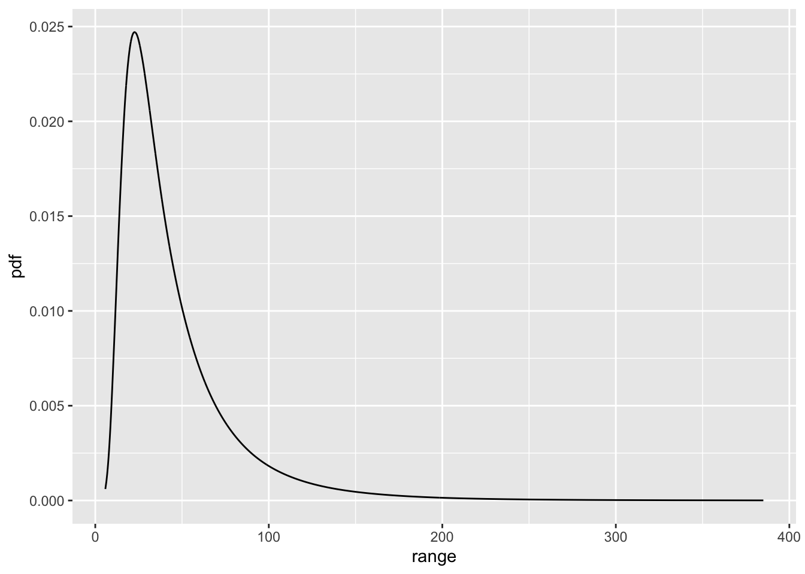
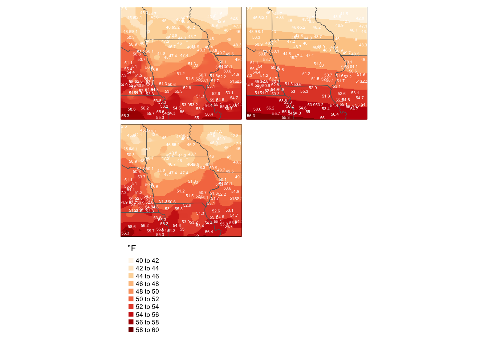

Thursday October 27, 2022
“Beyond basic mathematical aptitude, the difference between good programmers and great programmers is verbal ability.” – Marissa Mayer
Today
- Spatial data interpolation
- Computing the sample (empirical) variogram
Spatial data interpolation
In situ observations of the natural world are made at specific locations in space (and time). But we often want estimates of the values everywhere. The temperature reported at the airport is 15C, but what is it at my house 10 miles away?
We need to interpolate values observed at certain locations to values anywhere over the domain. To do this we assume the observations are taken from a continuous field (surface). Data observed or measured at locations across a continuous field are called geostatistical data. Examples: concentrations of heavy metals across a farm field, surface air pressures in cities across the country, air temperatures within a city during the night.
Local averaging, spline functions, or inverse-distance weighting are interpolation methods. If it is 20C five miles north of here and 30C files miles to the south, then it is 25C here. This type of interpolation is a reasonable first-order assumption. But these types of interpolation methods do not take into account spatial autocorrelation and do not estimate uncertainty about the interpolated values.
Kriging is statistical spatial interpolation. It is the centerpiece of what is called ‘geostatistics.’ The resulting surface (kriged surface) has three parts. (1) Spatial trend: an increase or decrease in the values that depends on direction or a covariate (co-kriging); (2) Local spatial autocorrelation. (3) Random variation. This should now sound familiar. Together the three components provide a model that is used to estimate values everywhere within a specified domain.
In short, geostatistics is used to quantify spatial correlation, predict values at locations where values were not observed, estimate uncertainty on the predicted values, and simulate data.
As we’ve done with areal data and point pattern data (Moran’s I, Ripley’s K), we begin with quantifying spatial autocorrelation. To get started we need some definitions.
- Statistical interpolation assumes the observed values are spatially homogeneous. This implies stationarity and continuity
- Stationarity means that the average difference in values between pairs of observations separated by a given distance (lag) is constant across the domain
- Continuity means that the spatial autocorrelation depends only on the lag (and orientation) between observations. That is; spatial autocorrelation is independent of location and can be described by a single function
- Stationarity and continuity allow different parts of the region to be treated as “independent” samples
Stationarity can be weak or intrinsic. Both assume the average of the difference in values at observations separated by a lag distance \(h\) is zero. That is, E\([z_i - z_j]\) = 0, where location \(i\) and location \(j\) are a (lag) distance \(h\) apart. This implies that the interpolated surface \(Z(s)\) is a random function with a constant mean (\(m\)) and a residual (\(\varepsilon\)).
\[ Z(s) = m + \varepsilon(s). \] The expected value (average across all values) in the domain is \(m\).
Weak stationarity assumes that the covariance is a function of lag distance \(h\).
\[ \hbox{cov}(z_i, z_j) = \hbox{cov}(h) \] where cov(\(h\)) is called the covariogram.
Intrinsic stationarity assumes the variance of the difference in values is a function of the lag distance.
\[ \hbox{var}(z_i - z_j) = \gamma(h), \] where \(\gamma(h)\) is called the variogram. This means that spatial autocorrelation is independent of location.
These assumptions are needed to get us started with statistical interpolation. If the assumptions are not met, we remove the trends in the data before spatially interpolating the residuals.
Computing the covariogram and the correlogram
In practice we focus on a model for the variogram \(\gamma(h)\). But to understand the variogram it helps to first consider the covariogram. This is because of our familiarity with the idea of nearby things being more correlated than things farther away.
To make things simple without loss in generality, we start with a 4 x 6 grid of equally spaced surface air temperatures across a field in degrees C.
21 21 20 19 18 19
26 25 26 27 29 28
32 33 34 35 30 28
34 35 35 36 32 31
Put the values into a data vector and determine the mean and variance.
temps <- c(21, 21, 20, 19, 18, 19,
26, 25, 26, 27, 29, 28,
32, 33, 34, 35, 30, 28,
34, 35, 35, 36, 32, 31)
mean(temps)## [1] 28.08333var(temps)## [1] 34.60145To start, you focus only on the covariance function in the north-south direction. To compute the sample covariance function you first compute the covariance between the observed values one distance unit apart. Using maths
\[ \hbox{cov}(0, 1) = 1/|N(1)| \sum (z_i - Z)(z_j - Z) \] where \(|N(1)|\) is the number of distinct observation pairs with a distance separation of one unit in the north-south direction and where \(Z\) is the average over all observations. We let zero in cov(0, 1) refer to the direction and we let one refer to the distance one unit apart. With this grid of observations \(|N(1)|\) = 18.
The equation for the covariance can be simplified to
\[ \hbox{cov}(0, 1) = 1/|N(1)| \sum z_i z_j - m_{-1} m_{+1} \] where \(m_{-1}\) is the average temperature over all rows except the first (northern most) and \(m_{+1}\) is the average temperature over all rows except the last (southern most).
To simplify the notation re-index the grid of temperatures using lexicographic (reading) order.
1 2 3 4 5 6
7 8 9 10 11 12
13 14 15 16 17 18
19 20 21 22 23 24
Then
mp1 <- mean(temps[1:18])
mm1 <- mean(temps[7:24])
cc <- sum(temps[1:18] * temps[7:24])/18
cc - mm1 * mp1## [1] 15.01852Or more generally
N <- 18
k <- 1:N
1/N * sum(temps[k] * temps[k + 6]) - mean(temps[k]) * mean(temps[k + 6])## [1] 15.01852The covariance has units of the observed variable squared (here \(^\circ C^2\)).
You also have observation pairs two units of distance apart. So you compute the cov(0, 2) in a similar way. \[ \hbox{cov}(0, 2) = 1/|N(2)| \sum z_i z_j - m_{-2} m_{+2} \] where \(m_{-2}\) is the average temperature over all rows except the first two and \(m_{+2}\) is the average temperature over all rows except the last two. \(|N(2)|\) is the number of pairs two units apart.
N <- 12
k <- 1:N
1/N * sum(temps[k] * temps[k + 12]) - mean(temps[k]) * mean(temps[k + 12])## [1] 2.9375Similarly you have observation pairs three units apart so you compute cov(0, 3) as \[ \hbox{cov}(0, 3) = 1/|N(3)| \sum z_i z_j - m_{-3} m_{+3} \]
N <- 6
k <- 1:N
1/N * sum(temps[k] * temps[k + 18]) - mean(temps[k]) * mean(temps[k + 18])## [1] 0.9444444There are no observation pairs four units apart in the north-south direction so you are finished. The covariogram is a plot of the covariance values as a function of lag distance. Let \(h\) be the lag distance, then
| \(h\) | cov(\(h\)) |
|---|---|
| (0, 1) | 15 |
| (0, 2) | 3 |
| (0, 3) | 1 |
It is convenient to have a measure of co-variability that is dimensionless. So you divide the covariance at lag distance \(h\) by the covariance at lag zero. This is the correlogram. Values of the correlogram range from 0 to +1.
The covariogram is a decreasing function of lag distance. The variogram is the inverse (multiplicative) of the covariogram.
Mathematically: var(\(z_i - z_j\)) for locations \(i\) and \(j\). The semivariogram is 1/2 the variogram. If location \(i\) is near location \(j\), the difference in the values will be small and so too will the variance of their differences, in general. If location \(i\) is far from location \(j\), the difference in values will be large and so too will the variance of their differences.
In practice you have a set of observations and we compute a variogram. This is the sample (empirical) variogram. Let \(t_i = (x_i, y_i)\) be the ith location and \(h_{i,j} = t_j - t_i\) be the vector connecting location \(t_i\) with location \(t_j\). Then the sample variogram is defined as
\[ \gamma(h) = \frac{1}{2N(h)} \sum^{N(h)} (z_i - z_j)^2 \] where \(N(h)\) is the number of observation pairs a distance of \(h\) units apart.
The variogram assumes intrinsic stationarity so the raw observed values should not have a trend. If there is a trend it needs to be removed before computing the variogram.
The sample variogram is characterized by a set of points the values of which generally increase as \(h\) increases before leveling off (reaching a plateau).
As an example, you compute and plot the sample variogram from the meuse.all data frame from the {gstat} package. First attach the data frame and look at the first six rows.
library(gstat)
data(meuse.all)
head(meuse.all)## sample x y cadmium copper lead zinc elev dist.m om ffreq soil
## 1 1 181072 333611 11.7 85 299 1022 7.909 50 13.6 1 1
## 2 2 181025 333558 8.6 81 277 1141 6.983 30 14.0 1 1
## 3 3 181165 333537 6.5 68 199 640 7.800 150 13.0 1 1
## 4 4 181298 333484 2.6 81 116 257 7.655 270 8.0 1 2
## 5 5 181307 333330 2.8 48 117 269 7.480 380 8.7 1 2
## 6 6 181390 333260 3.0 61 137 281 7.791 470 7.8 1 2
## lime landuse in.pit in.meuse155 in.BMcD
## 1 1 Ah FALSE TRUE FALSE
## 2 1 Ah FALSE TRUE FALSE
## 3 1 Ah FALSE TRUE FALSE
## 4 0 Ga FALSE TRUE FALSE
## 5 0 Ah FALSE TRUE FALSE
## 6 0 Ga FALSE TRUE FALSEThe data are locations and top soil heavy metal concentrations (ppm), along with a number of soil and landscape variables, collected in a flood plain of the river Meuse, near the village Stein, NL. Heavy metal concentrations are bulk sampled from an area of approximately 15 m x 15 m.
Next locate where the data are from. First convert the data frame to a spatial data frame and then use functions from the {tmap} package in view mode.
meuse.sf <- meuse.all |>
sf::st_as_sf(coords = c("x", "y"),
crs = 28992)
tmap::tmap_mode("view")## tmap mode set to interactive viewingtmap::tm_shape(meuse.sf) +
tmap::tm_bubbles(size = "zinc")## Legend for symbol sizes not available in view mode.Then compute the sample variogram and save it as meuse.v.
meuse.v <- variogram(zinc ~ 1,
data = meuse.all,
locations = ~ x + y)
class(meuse.v)## [1] "gstatVariogram" "data.frame"The output is an object of class gstatVariogram and data.frame. Plot the sample variogram and label the key features.
library(ggplot2)
ggplot(data = meuse.v,
mapping = aes(x = dist, y = gamma)) +
geom_point(size = 2) +
scale_y_continuous(limits = c(0, 210000)) +
geom_hline(yintercept = c(30000, 175000), color = "red") +
geom_vline(xintercept = 800, color = "red") +
xlab("Lag distance (h)") + ylab(expression(paste(gamma,"(h)"))) +
geom_segment(aes(x = 0, y = 0, xend = 0, yend = 30000,), arrow = arrow(angle = 15, length = unit(.3, "cm"))) +
geom_label(aes(x = 100, y = 10000, label = "nugget")) +
geom_segment(aes(x = 0, y = 10000, xend = 0, yend = 175000,), arrow = arrow(angle = 15, length = unit(.3, "cm"))) +
geom_label(aes(x = 180, y = 150000, label = "sill (partial sill)")) +
geom_segment(aes(x = 0, y = 190000, xend = 800, yend = 190000,), arrow = arrow(angle = 15, length = unit(.3, "cm"))) +
geom_label(aes(x = 250, y = 190000, label = "range")) +
theme_minimal()
- Lag (lag distance): Relative distance between observation locations (here units: meters)
- Nugget (nugget, nugget variance, or nugget effect): The height of the variogram at zero lag (here units ppm squared). The nugget is the variation in the values at the observation locations independent of spatial variation. It is related to the observation (or measurement) precision
- Sill: The height of the variogram at which the values are uncorrelated
- Relative nugget effect: The ratio of the nugget to the sill expressed as a percentage
- Range: The distance beyond which the values are uncorrelated. The range is indicated on the empirical variogram as the position along the horizontal axis where values of the variogram reach a constant height
Additional terms. - Isotropy: The condition in which spatial correlation is the same in all directions - Anisotropy: (an-I-so-trop-y) spatial correlation is stronger or more persistent in some directions - Directional variogram: Distance and direction are important in characterizing the spatial correlations. Otherwise the variogram is called omni-directional - Azimuth (\(\theta\)): Defines the direction of the variogram in degrees. The azimuth is measured clockwise from north - Lag spacing: The distance between successive lags is called the lag spacing or lag increment - Lag tolerance: The distance allowable for observational pairs at a specified lag. With arbitrary observation locations there will be no observations exactly a lag distance from any observation. Lag tolerance provides a range of distances to be used for computing values of the variogram at a specified lag.
Computing the sample variogram is the first step in modeling geostatistical data. The next step is fitting a model to the variogram. The model is important since the sample variogram estimates are made only at discrete lag distances (with specified lag tolerance and azimuth). You need a continuous function that varies smoothly across all lags. In short, the statistical model replaces the discrete set of points.
Variogram models come from different families. The fitting process first requires a decision about what family to choose and then given the family, a decision about what parameters (nugget, sill, range) to choose.
An exponential variogram model reaches the sill asymptotically. The range (a) is defined as the lag distance at which gamma reaches 95% of the sill.
c0 <- .1
c1 <- 2.1
a <- 1.3
curve(c0 + c1*(1 - exp(-3*x/a)),
from = .01, to = 3,
xlab = "h",
ylab = expression(paste(hat(gamma), "(h)")),
las = 1)
A spherical variogram model reaches the sill at x = 1.
curve(c0 + c1*(3*x/2 - x^3/2),
from = .01, to = 1,
xlab = "h",
ylab = expression(paste(hat(gamma), "(h)")),
las = 1)
A Gaussian variogram model is “S”-shaped (sigmodial). It is used when the data exhibit strong correlations at the shortest lag distances. The inflection point of the model occurs at \(\sqrt{a/6}\).
curve(c0 + c1*(1 - exp(-3*x^2/a^2)),
from = .01, to = 3,
xlab = "h",
ylab = expression(paste(hat(gamma), "(h)")),
las = 1)
Other families include
- Linear models: \(\hat \gamma(h)\) = c0 + b * h.
- Power models: \(\hat \gamma(h)\) = c0 + b * h\(^\lambda\).
These models have no sill.
Choosing a variogram family is largely done by looking at the shape of the sample variogram. Then, given a sample variogram computed from a set of spatial observations and a choice of family, the parameters of the variogram model are determined by weighted least-squares (WLS). Weighting is needed because the because the sample variogram estimates are computed using a varying number of point pairs.
There are other ways to determine the parameters including by eye, and by the method of maximum likelihoods, but WLS is less erratic than other methods and it requires fewer assumptions about the distribution of the data. And the process can be automated and it often is in high-level packages, but it is important to understand what is in the black box.
The final step in spatial statistical interpolation is called kriging. Kriging interpolates the observed data using the variogram model. It was developed by a South African miner (D.G. Krige) as a way to improve estimates of where ore reserves might be located. Extraction costs are reduced substantially if good predictions can be made of where the ore resides given samples taken across the mine.
A kriged estimate is a weighted average of the observations where the weights are based on the variogram model. The kriged estimates are optimal in the sense that they minimize the error variance. The type of kriging depends on the characteristics of the observations and the purpose of interpolation.
- Simple kriging assumes a known constant mean for the domain
- Ordinary kriging assumes an unknown constant mean
- Universal kriging assumes an unknown linear or nonlinear trend in the mean
To review, the steps for spatial interpolation (statistical) are:
- Examine the observations for trends and isotropy
- Compute a sample (empirical) variogram
- Fit a variogram model to the empirical variogram
- Create an interpolated surface using the variogram model together with the data (kriging)
Computing the sample variogram
The {gstat} package contains functions for spatial interpolation that take advantage of simple feature (and S4 class) spatial data data frames.
Suppose we have the following set of observations (zobs) at locations (sx, sy).
sx <- c(1.1, 3.2, 2.1, 4.9, 5.5, 7, 7.8, 9, 2.3, 6.9)
sy <- c(3, 3.5, 6, 1.5, 5.5, 3.2, 1, 4.5, 1, 7)
zobs <- c(-0.6117, -2.4232, -0.42, -0.2522, -2.0362, 0.9814, 1.842,
0.1723, -0.0811, -0.3896)Create a data frame and plot the observed values at the locations using the geom_text() function.
sf <- data.frame(sx, sy, zobs) |>
sf::st_as_sf(coords = c("sx", "sy"),
crs = 4326)
ggplot(data = sf,
mapping = aes(x = sx, y = sy, label = zobs)) +
geom_text() +
theme_minimal()
Lag distance (distance between locations) is the independent variable in the variogram function. You get all pairwise distances by applying the dist() function to a matrix of spatial coordinates.
dist(cbind(sx, sy))## 1 2 3 4 5 6 7 8
## 2 2.158703
## 3 3.162278 2.731300
## 4 4.085340 2.624881 5.300000
## 5 5.060632 3.047950 3.436568 4.044750
## 6 5.903389 3.811824 5.643580 2.701851 2.745906
## 7 6.992138 5.235456 7.582216 2.942788 5.053712 2.340940
## 8 8.041144 5.885576 7.061161 5.080354 3.640055 2.385372 3.700000
## 9 2.332381 2.657066 5.003998 2.647640 5.521775 5.189412 5.500000 7.559100
## 10 7.045566 5.093133 4.903060 5.852350 2.051828 3.801316 6.067125 3.264966
## 9
## 2
## 3
## 4
## 5
## 6
## 7
## 8
## 9
## 10 7.560423max(dist(cbind(sx, sy)))## [1] 8.041144min(dist(cbind(sx, sy)))## [1] 2.051828The dist() function computes a pairwise distance matrix. The distance between the first and second observation is 2.16 units and so on. The largest lag distance is 8.04 units and the smallest lag distance is 2.05 units.
The functions in the {gstat} package work with simple feature objects.
As another example, consider the dataset called topo from the {MASS} package. The data are topographic heights (feet) within a 310 sq ft domain.
Examine the data with a series of plots.
topo.df <- MASS::topo
p1 <- ggplot(data = topo.df,
mapping = aes(x = x, y = y, color = z)) +
geom_point() +
scale_color_viridis_c() +
theme_minimal()
p2 <- ggplot(data = topo.df,
mapping = aes(x = z, y = y)) +
geom_point() +
geom_smooth(method = lm, se = FALSE) +
theme_minimal()
p3 <- ggplot(data = topo.df,
mapping = aes(x = x, y = z)) +
geom_point() +
geom_smooth(method = lm, se = FALSE) +
theme_minimal()
p4 <- ggplot(data = topo.df,
mapping = aes(x = z)) +
geom_histogram(bins = 13) +
theme_minimal()
library(patchwork)
( p1 + p2 ) / ( p3 + p4 )## `geom_smooth()` using formula 'y ~ x'
## `geom_smooth()` using formula 'y ~ x'
Note the trend in the north-south direction and the skewness in the observed values.
Examine the residuals after removing a first-order trend from the observations.
topo.df$z1 <- residuals(lm(z ~ x + y, data = topo.df))
p1 <- ggplot(data = topo.df,
mapping = aes(x = x, y = y, color = z1)) +
geom_point() +
scale_color_viridis_c() +
theme_minimal()
p2 <- ggplot(data = topo.df,
mapping = aes(x = z1, y = y)) +
geom_point() +
geom_smooth(method = lm, se = FALSE) +
theme_minimal()
p3 <- ggplot(data = topo.df,
mapping = aes(x = x, y = z1)) +
geom_point() +
geom_smooth(method = lm, se = FALSE) +
theme_minimal()
p4 <- ggplot(data = topo.df,
mapping = aes(x = z1)) +
geom_histogram(bins = 13) +
theme_minimal()
( p1 + p2 ) / ( p3 + p4 )## `geom_smooth()` using formula 'y ~ x'
## `geom_smooth()` using formula 'y ~ x'
The north-south trend is removed and the observations have a more symmetric distribution. There appears to be some non-linear trend (U-shape) in the east-west direction.
However, the residuals appear to show spatial autocorrelations (areas with above and below residuals).
Compare the empirical variograms using first the raw values and then the residuals after removing the first-order trend.
topo.sf <- topo.df |>
sf::st_as_sf(coords = c("x", "y"))
topo.v1 <- variogram(z ~ 1,
data = topo.sf,
cutoff = 2.5)
topo.v2 <- variogram(z1 ~ 1,
data = topo.sf,
cutoff = 2.5)
ggplot(data = topo.v1,
mapping = aes(x = dist, y = gamma)) +
geom_point(color = "red") +
geom_point(data = topo.v2,
mapping = aes(x = dist, y = gamma),
color = "black") +
scale_x_continuous(breaks = seq(0, 2.5, by = .25)) +
xlab("Lag distance (h)") +
ylab(expression(paste(gamma,"(h)"))) +
theme_minimal()
The semivariance (\(\gamma(u)\)) is plotted against lag distance. Values increase with increasing lag until a lag distance of about 2.
At large lags there are fewer estimates so the values have greater variance. A model for the semivariance is fit only for the the increasing portion of the graph.
The variogram values have units of square feet and are calculated using point pairs at lag distances within a lag tolerance. The number of point pairs depends on the lag so the variogram values are less precise at large distance.
Plot the number of point pairs used as a function of lag distance.
ggplot(data = topo.v2,
mapping = aes(y = np, x = dist)) +
geom_point() +
xlab("Lag Distance") + ylab("Number of Observation Pairs") +
theme_minimal()